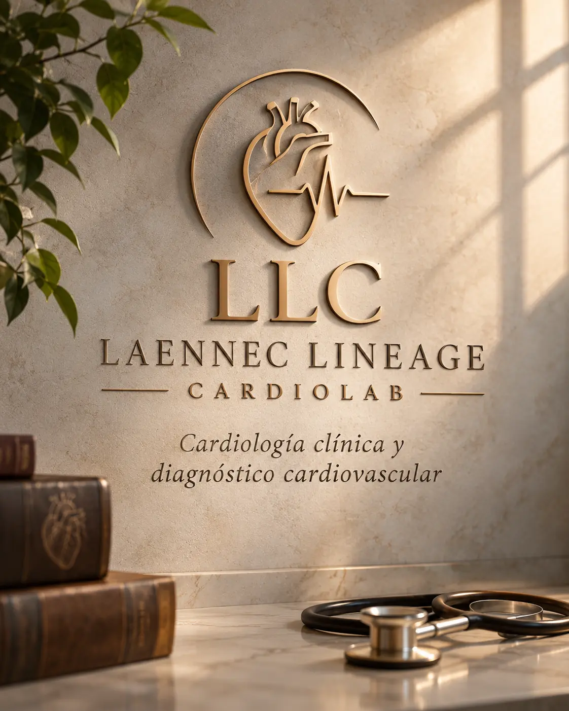

Registro y monitoreo
Electrocardiograma, Holter cardíaco y presurometría de 24 horas.
Consultar por estos estudiosMás de 15 años de experiencia en cardiología, con herramientas actuales de diagnóstico y una atención humana y personalizada.

Laennec Lineage Cardiolab nace de una convicción: la buena medicina combina formación clínica sólida, herramientas diagnósticas actuales y una relación médico-paciente basada en la escucha.
El Dr. Álvaro Raúl Villarreal, especialista en cardiología clínica, tiene más de 15 años de trayectoria y se mantiene en actualización permanente, con foco en la evaluación integral de la salud cardiovascular.
Pedir turno por WhatsAppHerramientas para la prevención, el diagnóstico y el seguimiento cardiovascular. La indicación de cada estudio depende de la evaluación médica.
Recorré los estudios
Electrocardiograma, Holter cardíaco y presurometría de 24 horas.
Consultar por estos estudiosEvalúa la respuesta cardiovascular durante el ejercicio.
Consultar por este estudioEstudia la estructura y el funcionamiento del corazón.
Consultar por este estudioEvalúa el flujo sanguíneo en arterias y venas periféricas.
Consultar por este estudioEvaluación cardiovascular previa a la actividad deportiva.
Consultar por este estudioValoración cardiovascular antes de una intervención.
Consultar por este estudioLos estudios requieren indicación y coordinación previa.
Estas son algunas de las razones más comunes por las que nuestros pacientes nos consultan.
Un Holter y una evaluación clínica permiten ver cómo late tu corazón durante el día a día.
Pedir turno por WhatsAppLa presurometría registra tu presión durante 24 horas y ayuda a ajustar el seguimiento.
Pedir turno por WhatsAppHacemos la evaluación cardiovascular previa, prequirúrgica o de aptitud física deportiva.
Pedir turno por WhatsAppUn chequeo cardiológico es el mejor primer paso para saber cómo estás y qué estudios te convienen.
Pedir turno por WhatsAppAnte dolor de pecho intenso o falta de aire repentina, acudí de inmediato a una guardia. Este sitio no reemplaza una consulta médica.
Estudios y evaluación con criterio médico, sin pedir de más ni quedarnos cortos.
Escucha, explicaciones claras y seguimiento adaptado a cada paciente.
Formación continua y estrategias modernas de diagnóstico y tratamiento.
Cada consulta es un espacio para preguntar, entender y decidir con tranquilidad. Te explicamos tus resultados con claridad y te acompañamos en el seguimiento.
Contanos qué necesitás por WhatsApp.
Elegimos sede, modalidad y confirmamos tu cobertura.
Te evaluamos y, si hace falta, realizamos los estudios indicados.
Te explicamos los resultados y definimos los próximos pasos.
Escribinos por WhatsApp. Coordinamos sede, modalidad y horario según tu consulta. La atención es con turno previo.
Atendemos obras sociales, prepagas y pacientes particulares. Consultanos por tu cobertura y te confirmamos.
Sí, según modalidad y coordinación previa. Te indicamos si tu caso puede resolverse a distancia.
La realización de estudios requiere indicación médica y coordinación previa. Si no la tenés, podés pedir una consulta para evaluarlo.
En Río Cuarto (Córdoba) y en La Banda (Santiago del Estero). Los detalles de cada sede están en la sección Contacto.
Escribinos y coordinamos tu turno en la sede que te quede más cómoda, o de forma virtual.
Pedir turno por WhatsAppConsultas presenciales en Córdoba y Santiago del Estero. Consultas virtuales según coordinación.
Dirección de muestra 1234, Río Cuarto, Córdoba.
Con turno previo.
Dirección de muestra 5678, La Banda, Santiago del Estero.
Con turno previo.